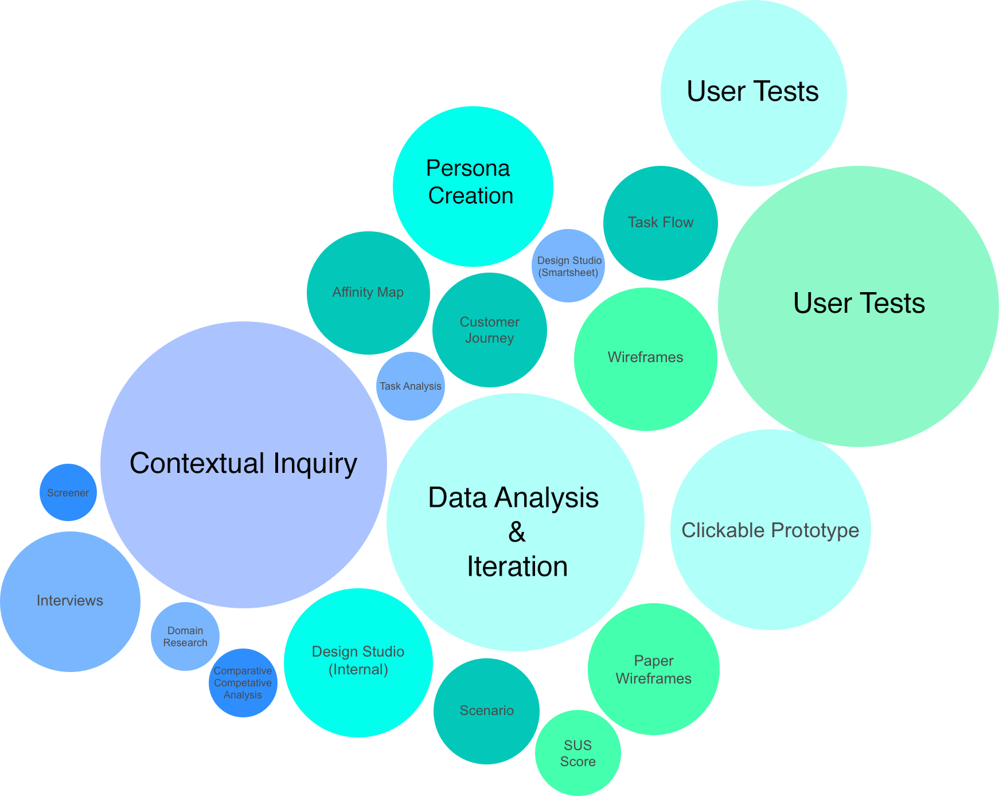
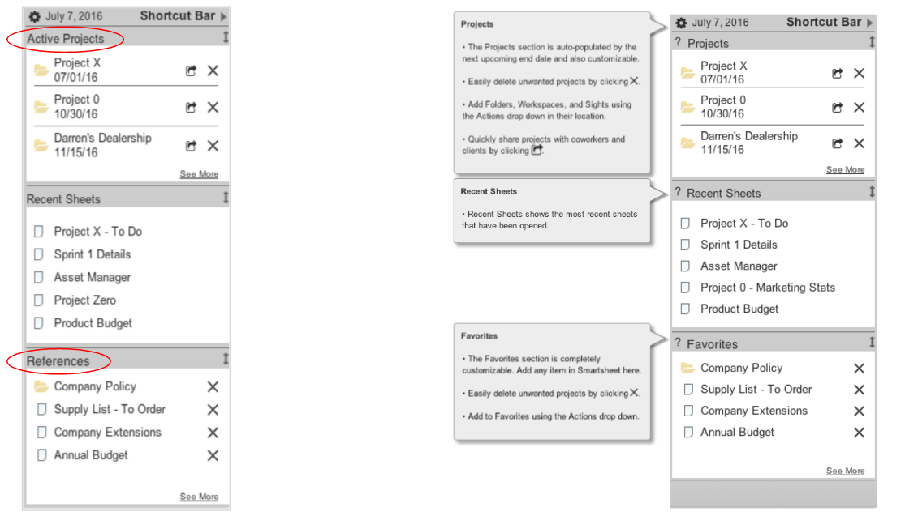
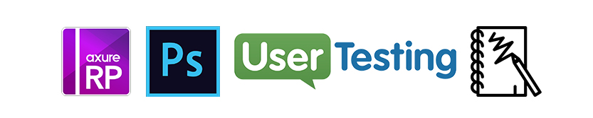

Smartsheet Shortcuts
Customizable navigation that allows power users to quickly access what they need

Opportunity
How can give power users the ability to expedite their workflow and create organization in a powerful and complex tool?
Solution
The Shortcut Bar is always a click away and populated with the users' most important items. It allows quick navigation through an organized workspace.
Role
I was a collaborator on team of three throughout each stage of the design process. I was primarily responsible for user research, user testing, and stakeholder communications.

Process
Smartsheet is a powerful software as service (SaaS) application for project management and collaboartion. Given the high use levels and resulting tendency towards accumulation, my team's design process was centered around helping users find what they need quickly. We conducted user research in the form of a hybrid user interview and contextual inquiry; we wanted to observe how users interacted with Smartsheet - what shortcuts they created for themselves, how they organized their work and what slowed them down. A large part of the analysis was synthesizing data from from a wide range of users, and then designing an MVP that would serve the power user. We put the data points from the contextual inquiries into an affinity diagram.

Key insights:
I want a personalized tool
I want more flexibility in organization
Almost all users appreciated the capabilities of Smartsheet. Some even said it made them more proud of their work. Their painpoints centered around navigating through unorganized systems of sheets and workspaces. Users found it frustrating to click through the tabs that accumulated at the top of their screen. Although the group of users had unique workflows, they all had certain work they spent their time on, and many other sheets they never looked out. We decided to design, or redesign, a feature that allows user to navigate to where they need to go.

My team conducted several design brainstorming sessions to incorporate a breadth of mental models. With many data points as our foundation, we were then able to move forward with our design of the Shortcut Tab.
We developed our design through multiple iterations, starting with a the shell of a customizable slide-out side bar with links to important items. With more feedback from users, we clarified the functions that users needed most. With a tool as complex as Smartsheet, more user research and testing is needed. However, we were able to create a feature with a purpose that all users found intuitive and helpful.

Results
In tests, users found the Shortcut Bar intuitive. We validated our initial concept and going forward, we would like to focus power-user research on project managers in order to develop the finer details.
Tools
© Adrienne Kahan 2016